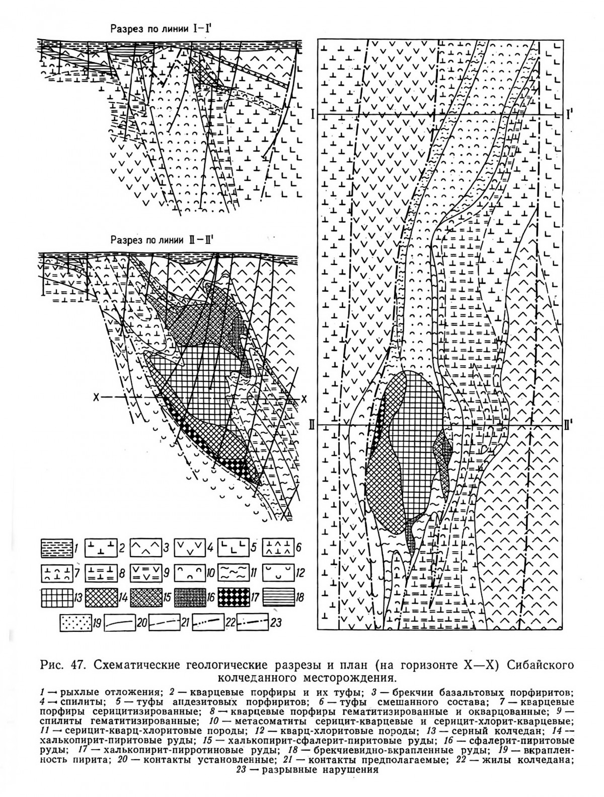
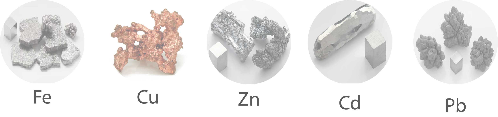

Интерактивная визуализация изменений изучаемой территории за 30 летний период
Объект исследования
Сибайское медно-цинково-колчеданное месторождение: карьер, отвалы вскрышных пород, хвостохранилище и прилегающие к ним территории. ㅤПредмет исследования
Способы применения данных дистанционного зондирования Земли, геоинформационных технологий и геологических индексов для анализа ландшафта, почв, водных объектов в районе Сибайского месторождения. ㅤЦель
Создание и анализ серии карт Сибайского месторождения при помощи геоинформационных систем и данных дистанционного зондирования Земли. ㅤЗадачи:
1. Изучить геологическое строение Сибайского месторождения. 2. Выполнить сбор космических снимков Landsat на территорию исследования. 3. Рассчитать Normalized Difference Vegetation Index (NDVI), Water Ratio Index (WRI) и геологические индексы на исследуемой местности. 4. Построить псевдоцветные изображения для дешифрирования техногенных объектов и зон распространения вещества. 5. Провести сравнительный анализ снимков за разные временные периоды для оценки динамики изменений ландшафта, почв, растительности и водных объектов. 6. Произвести оценку содержания веществ на поверхности изучаемой территории. ㅤ1.1 Географическое описание
Сибайское медно-цинково-колчеданное месторождение расположено в Баймакском районе Республики Башкортостан, вблизи города Сибая. Месторождение находится в зоне степных ландшафтов Зауралья, представляя собой увалисто-холмистую равнину, расчлененную реками Карагайлы и Худолаз. Разработка Сибайского месторождения привела к изменению естественного рельефа. В процессе работ по добыче руды образовались новые формы рельефа: карьер, отвалы вскрышных пород и хвостохранилище. ㅤ1.2 Геологическое строение
Сибайское колчеданное медно-цинковое месторождение находится в центральной части западного крыла Магнитогорского прогиба. Месторождение приурочено к восточному крылу антиклинали, сложенной породами риолит-базальтовой формации (карамалыташская свита) и ограниченной крутопадающими разломами, по которым рудовмещающие породы контактируют с перекрывающими их вулканогенно-осадочными отложениями улутауской свиты. В районе месторождения развиты (снизу вверх): диабазы, кварцевые риодациты, подушечные базальты, вулканогенно-осадочные и кремнистые породы, риолиты, гиалокластиты. Рудные тела расположены на контактах риолитов. Околорудные метасоматиты серицит-кварцевого, хлорит-кварцевого и серицит-хлорит-кварцевого состава образуют крутопадающую зону в лежачем боку рудных тел, мощность которой возрастает с юга на север от 20 до 300 м. ㅤ Главные рудообразующие минералы месторождения — пирит (65-90% рудной массы), халькопирит и сфалерит, второстепенные — пирротин, мельниковит, магнетит, реже встречаются — галенит, арсенопирит, теннантит, борнит, гематит, энаргит, гринокит, фрейбергит, киноварь; нерудные минералы - кварц, кальцит, сидерит, анкерит, гипс, барит, хлорит, серицит, тальк. Основные промышленные руды — медно-цинковые и серноколчеданные, отношение меди к цинку составляет 1:1,6. Сибайское месторождение является эталоном колчеданных месторождений уральского типа. Основные запасы отработаны карьерами. Максимальный уровень добычи был достигнут в 1973 году — 7 млн.т руды. ㅤ В настоящее время добыча руды на месторождении ведётся подземным способом[4]. ㅤ
1.3 Эколого-геохимическое описание
Формирование на территории естественных геохимических провинций связано с геологическими факторами, способствующими повышенному содержанию в почвообразующих породах ряда химических элементов, главным образом, относящихся к группе тяжелых металлов. ㅤ Провинции различаются между собой по содержанию химических элементов. Также внутри одной и той же провинции концентрации элементов могут отличаться в несколько раз. Геохимические провинции создают общий фон, во многих случаях превышающий Кларки соответствующих элементов. В то же время участки с повышенным или с пониженным содержанием тяжёлых металлов возникают в результате процессов эрозии, выветривания и миграции комплексных масс почв и грунтов либо в результате разной подвижности солей тех или иных металлов. ㅤ Интенсивная и длительная разработка и эксплуатация месторождений полиметаллических руд привела к образованию техногенных ландшафтов с многократным превышением в почвах предельно допустимые концентрации по Cu, Zn, Cd и другим тяжёлым металлам. Работы по добыче руд оказывают значительное влияние на окружающую среду, проявляющееся как в загрязнении её различными веществами, так и изменении рельефа территорий, видового состава растительности, деградации почв. Накопление веществ в почвах происходит как инфильтрационным стоками вблизи предприятий, так и аэрогенным путем [8]. ㅤ
2.1 Программное обеспечение и описание спутников Landsat
Для оценки изменения почв, растительности, водных объектов и распределения загрязняющих веществ в районе Сибайского месторождения были использованы космические снимки Landsat. На данный момент геологическая служба Соединённых Штатов Америки обладает наибольшим количеством спутниковых снимков в открытом доступе, начиная с 1973 года по 2026 год включительно, что позволяет проследить динамику за более чем пятидесятилетний период. Снимки Landsat являются мультиспектральными, их характеристики приведены в табл. 1.
| Номер канала | Landsat 4-5 TM | Landsat 8-9 OLI/TIRS | ||||
|---|---|---|---|---|---|---|
| Спектральный диапазон, мкм — Пространственное разрешение, м |
Описание | Спектральный диапазон, мкм — Пространственное разрешение, м |
Описание | |||
| 1 | 0,45–0,52 — 30 | Синий | 0,435–0,451 — 30 | Фиолетовый | ||
| 2 | 0,52–0,60 — 30 | Зеленый | 0,452–0,512 — 30 | Синий | ||
| 3 | 0,63–0,69 — 30 | Красный | 0,533–0,590 — 30 | Зеленый | ||
| 4 | 0,76–0,90 — 30 | Ближний ИК (NIR) | 0,636–0,673 — 30 | Красный | ||
| 5 | 1,55–1,75 — 30 | Коротковолновый ИК | 0,851–0,879 — 30 | Ближний ИК (NIR) | ||
| 6 | 10,40–12,50 — 120 | Тепловой ИК (TIR) | 1,566–1,651 — 30 | Коротковолновый ИК (SWIR1) | ||
| 7 | 2,08–2,35 — 30 | Коротковолновый ИК | 2,107–2,294 — 30 | Коротковолновый ИК (SWIR2) | ||
| 8 | - | - | 0,503–0,676 — 15 | Панхроматический | ||
| 9 | - | - | 1,363–1,384 — 30 | Перистые облака | ||
| 10 | - | - | 10,6–11,19 — 100 | Тепловой ИК (TIR1) | ||
| 11 | - | - | 11,5–12,51 — 100 | Тепловой ИК (TIR2) | ||
На исследуемую территорию были скачены изображения за 27 июня 1995 года с Landsat 5 и 29 мая 2025 года со спутника Landsat 8 с сайта Earth explorer [12]. ㅤ Для получения изображений, обработки и анализа была использована геоинформационная система QGIS, где при помощи встроенных инструментов удалось провести работу по обработке космических снимков, которая включала в себя расчет индексов, построение изображений происходило при помощи комбинаций спектральных каналов, полученных со спутников Landsat. Расчёт площадей производился при помощи инструмента «Измерить площадь» [16]. ㅤ Спектрометрические методы ДЗЗ основаны на том, что каждый природный объект обладает уникальными характеристиками поглощения, отражения и испускания электромагнитного излучения. Съемка местности производится в нескольких узких спектральных диапазонах (каналах) регистрируемого сигнала, как в видимой (красная, зеленая, синяя), так и невидимой человеческому глазу (ближняя, коротковолновая и тепловая инфракрасная) областях спектра. Данные ДЗЗ представляются в виде цифровых растровых изображений, при этом значение каждого пиксела снимка является суммарным сигналом от всех компонентов отображаемого участка земной поверхности [10]. ㅤ Спектральная яркость горных пород обусловлена их химическим и минеральным составом, структурными и текстурными особенностями. Для пород, состоящих из светлых и темных минералов, даже небольшое количество темноцветных зерен значительно увеличивает поглощение электромагнитного излучения, что вносит основной вклад в результирующий сигнал [1]. ㅤ
2.2 Индексы
Индексы в ДДЗ (данных дистанционного зондирования Земли) — это показатели, рассчитываемые на основе операций со спектральными каналами космических или аэрофотоснимков для оценки характеристик земной поверхности. Они позволяют подсветить определенные объекты или состояния — растительность, воду, почву, минералы, — которые трудно различить на обычном цветном снимке [11].
ㅤДля анализа и оценки состояния растительности использовался индекс NDVI (Normalized Difference Vegetation Index), который рассчитывается по формуле [2]:
ㅤ
Для анализа количества влаги в почвах использовался индекс WRI (Water Ratio Index) [6]:
Для наглядной визуализации данных о распространении веществ на территории Сибайского месторождения были использованы геологические индексы (табл. 2), показывающие отражающую способность минералов на свободных от растительности территориях.
| Название | Комбинация каналов Landsat 8 | Описание |
|---|---|---|
| Оксиды железа | 4 / 2 | Выделяет все оксиды железа |
| Трёхвалентное железо | 4 / 3 | Показывает содержание Fe³⁺ |
| Двухвалентное железо | 4 / 6 | Показывает содержание Fe²⁺ |
| Глинистые минералы | 6 / 7 | Выявление зон распространения почв, глин и аргиллитов |
3.1 Описание ландшафта
3.2 Спектральные образы
3.3 Индекс NDVI
3.4 Индекс WRI
3.5 Содержание железистых минералов
3.6 Содержание оксидов железа
3.7 Содержание глинистых минералов
3.8 Содержание трёхвалентного железа
3.9 Содержание двухвалентного железа